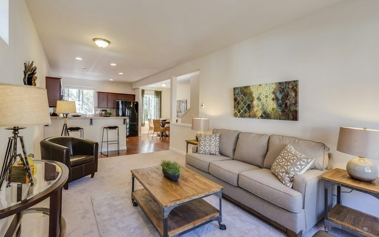
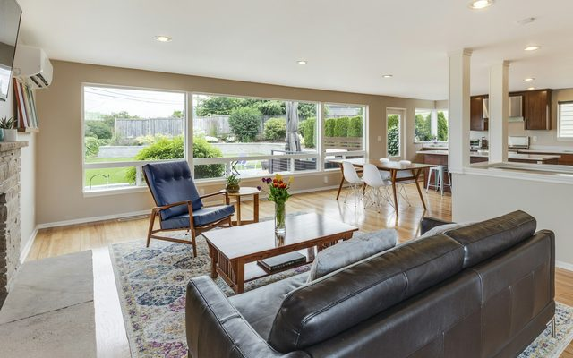

Blog y guías
Para decidir con información
Guías prácticas sobre comprar, rentar, vender e invertir en la Ciudad de México. Sin frases de folleto: números, procesos y lo que realmente conviene revisar.

¿Cuánto cuesta vivir en Polanco en 2026?
El precio del departamento es solo una parte. Mantenimiento, predial, estacionamiento y estilo de vida cambian el número final más de lo que la gente espera.
Leer guía
Roma Norte vs Condesa: ¿dónde conviene vivir?
Son vecinas, comparten precio y se confunden todo el tiempo. Pero se viven distinto, y esa diferencia decide la compra.
Leer guía
5 errores al comprar un departamento en CDMX
Los cinco que veo con más frecuencia, y que casi siempre se pueden evitar con una revisión de treinta minutos.
Leer guíaCómo calcular el precio por metro cuadrado (y por qué a veces engaña)
Es el indicador más usado del mercado inmobiliario y también el peor interpretado. Así se usa bien.
Leer guíaCrédito hipotecario en CDMX: lo que conviene saber antes de solicitarlo
Enganche, capacidad de pago, tasa fija y los cuatro documentos que deciden si te autorizan.
Leer guía
Dónde invertir para renta en CDMX: cuatro zonas con números
Rendimiento bruto, vacancia y perfil de inquilino en Roma Sur, Narvarte, Mixcoac y Escandón.
Leer guíaPor qué tu departamento no se vende (y casi nunca es la propiedad)
Las tres razones reales por las que una propiedad lleva ocho meses publicada en la Ciudad de México.
Leer guíaRentar en CDMX: requisitos, depósitos y qué revisar en el contrato
Aval, póliza jurídica, depósito e inventario. Lo que conviene tener listo antes de empezar a buscar.
Leer guía
Vivir en Del Valle: la colonia que casi siempre gana la comparación
Por qué tantos compradores terminan en Del Valle después de recorrer media ciudad.
Leer guíaTres cosas que están cambiando en el mercado inmobiliario de CDMX
Verticalización del centro-sur, el peso del home office en la búsqueda y la nueva competencia por el inventario de renta.
Leer guíaPor categoría
Todas las guías
Comprar
Invertir
Créditos hipotecarios
Zonas de CDMX
Lifestyle
Tendencias
¿Tu caso no está en ninguna guía?
Escríbeme y lo resolvemos en una conversación. Suele ser más rápido que leer diez artículos.